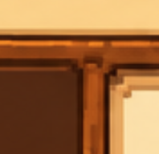
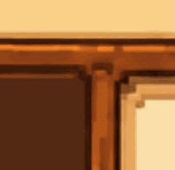

This is a junction study at the supplied crop’s scale, not a full app redesign. The SVG trace groups the sampled colours into 48 shades. The rail, post and parchment lip extend separately; the junction and edge artwork keep their source dimensions.